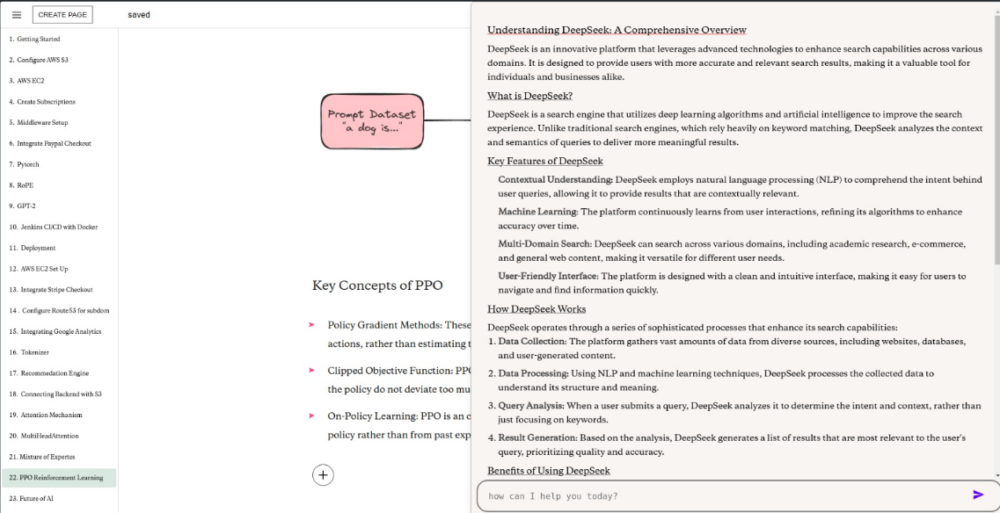
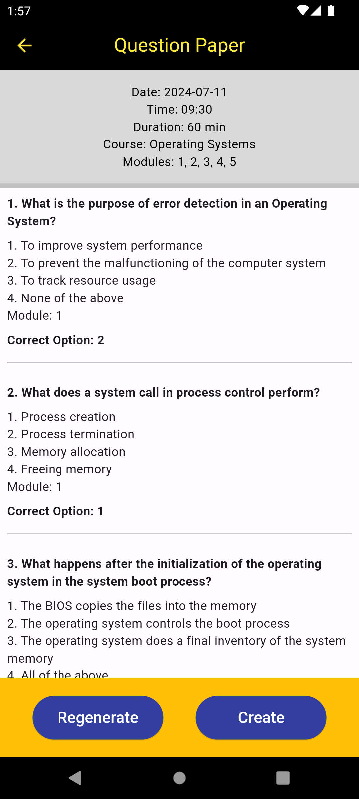
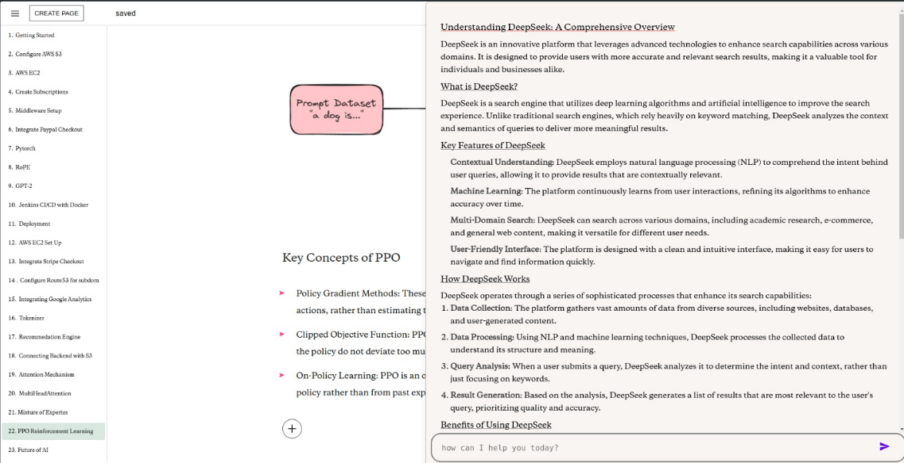
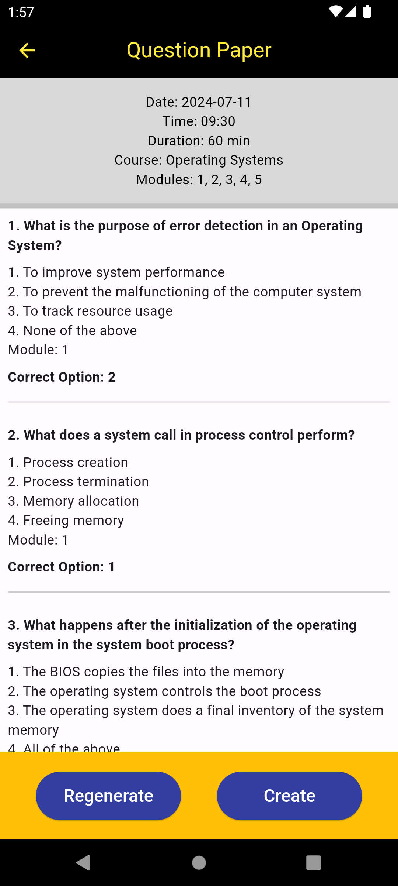

About
Hi, I'm Abel Mathew Joby. I'm a passionate developer with experience in building AI-powered and data-driven solutions. I completed my B.Tech in Computer Science and Engineering at Rajiv Gandhi Institute of Technology. I love working on impactful projects that blend modern technologies like React, Flutter, and AI.
Skills
Languages: Python, C/C++, JavaScript, HTML/CSS, Java, Dart, SQL
Frameworks: React, Flutter, Flask
Developer Tools: Git, Postman, VS Code, Visual Studio, RESTful APIs
Databases: Cloud Firestore, MongoDB
Frameworks: React, Flutter, Flask
Developer Tools: Git, Postman, VS Code, Visual Studio, RESTful APIs
Databases: Cloud Firestore, MongoDB
Projects
OpenDocs: AI-powered documentation platform using React, Flask, Node.js, and Rust. Features real-time collaboration and AI-generated content (text, code, images).
 Focus Prep: Flutter-based AI quizzing app integrated with Firebase and OpenAI. Enables teachers to generate quizzes dynamically and conduct classroom tests. 
 Focus Prep: Flutter-based AI quizzing app integrated with Firebase and OpenAI. Enables teachers to generate quizzes dynamically and conduct classroom tests. 